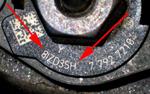
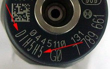

Due to tolerances at the manufacturing of the injectors, the amount of fuel that actually is injected can vary. After manufacturing the variation is set for each injector and an adjustment value is set. With these adjustment values the ECU corrects the calculated amount of fuel injected and thus the exhaust emission is improved. With this function the mounted injectors adjustment values can be altered or saved again in the ECU.
Note:
If an injector is restored or replaced you have to check the imprinted adjustment value on the injector compared with the value that is stored for that specific cylinder in the ECU.
If the ECU is replaced you have to do an adjustment for all cylinders so all the mounted injectors adjustment values are stored in the new ECU.
How the adjustment value is built depends on the emission class of the engine.
Emission class EURO 4: Seven digits (see picture, Fig 1).
Emission class EURO 3: Six digits (see picture, Fig 2).

Fig 1.

Fig 2.
Test prerequisites:
Ignition on, engine off.
No faults in the system.
Procedure:
Read the adjustment value of the injector.
Start the function, stored values for all cylinders are displayed. If you want to change a value press "YES".
Choose which cylinder you want to cange the value on, type in the new value and press "OK" to save the changes.
Values for all cylinders are shown again. Check that the new value for the chosen cylinder is displayed.
If no additional values should be altered press "NO" to end the function.